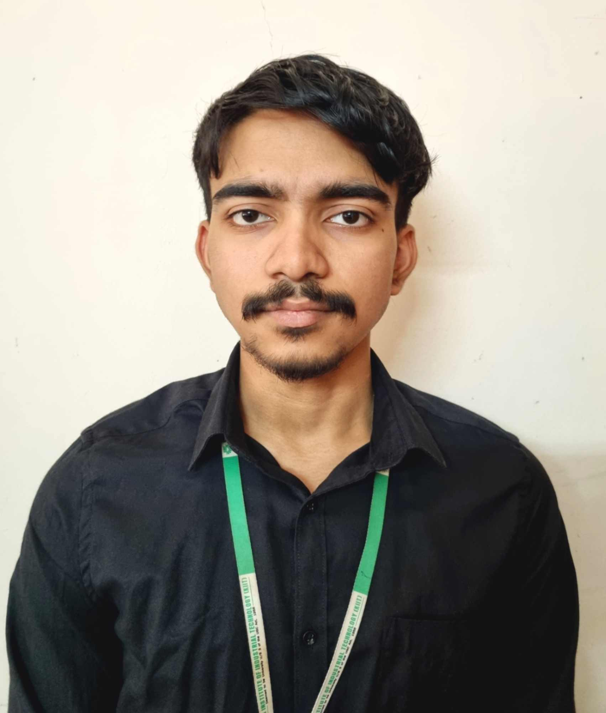

Suyash Dutta

Summary
Passionate and dedicated professional with a strong foundation in algorithms and data structures. Skilled in machine learning and full-stack web development, eager to join an innovative team and
contribute to impactful projects. Driven by a love for technology, I bring an analytical mindset, robust programming skills, and a commitment to continuous learning. Ready to gain valuable industry
experience and make meaningful contributions to cutting-edge solutions.
Education
- B.Tech : Computer Science and Engineering - KIIT University (2021-2025)
Work Exerience
- Student Intern - Unicompiler
March 2022 - September 2022
As Student Intern, I managed and optimized the company's official website, ensuring it aligned with our marketing strategy and provided an optimal user experience.
- Collaborated with product and development teams to align marketing strategies with product features, enhancing the user experience and driving product adoption.
- Worked closely with developers to translate technical product features into user-friendly marketing content, bridging the gap between technical and non-technical stakeholders
- Gained hands-on experience with content management basic HTML/CSS for website updates and email template customization.
- Gathered and analyzed customer feedback, working with the tech team to refine product features and ensure alignment with market demands.
Skills
- C, C++, Python
- Data Structures and Algorithms
- Front-End Web Development
- Machine Learning
- Version Conntrol Systems
- CS fundamentals
Other